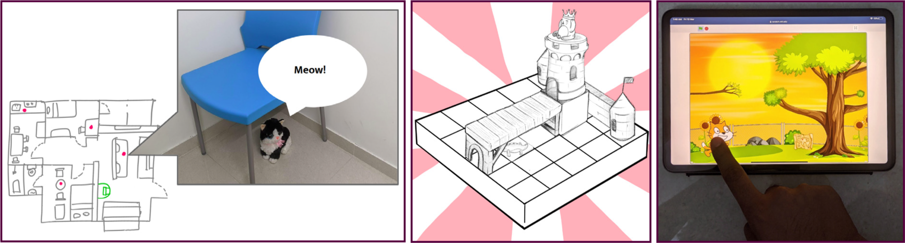
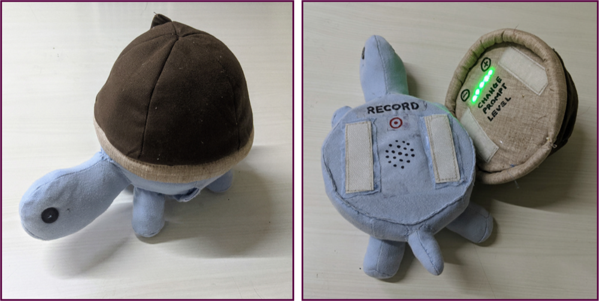

The project aimed at translating traditional therapy techniques for teaching prepositions to children with Autism Spectrum Disorder (ASD) into a playful activity. This project was motivated by the lack of playful therapy interventions in local languages that could be effectively carried out at home by parents. The project explores how to create engaging, effective activities that children with ASD can enjoy while learning essential language skills.
The concept generation process involved three stages:
- Identifying the Need: Based on primary field studies, including observations and interviews, key challenges in conducting home therapy were identified. These included children's lack of interest, parental misunderstanding of ASD therapy, and the difficulty of integrating therapy into daily routines.
- Analyzing Existing Techniques: A thorough review of current therapy techniques and preferred activities of children with ASD was conducted. This review highlighted a gap in existing serious games and activities focusing on preposition skills.
-
Ideation and Conceptualization:
Drawing from the insights gained, three initial
concepts were developed:
- Cat Goes Home: An iPad-based interactive story game.
- Build-a-Castle: A 3D tabletop block-building activity.
- Zoo Frenzy: An environmental interaction activity involving a treasure hunt-like game.

After expert evaluation and integrating feedback, the final design centred on an interactive toy called "Clumsy Turtle." This design utilized environmental interactions and was crafted to be engaging and educational.
- Design Components: The toy consists of a soft turtle toy with a detachable shell. The shell's location is hidden by the parent, and the child must find it based on audio prompts from the turtle. The difficulty level can be adjusted through prompt levels.
- Therapeutic Integration: The activity mirrors traditional therapy progressions, gradually increasing in difficulty as the child masters each skill. The design ensures the maintenance of therapeutic efficacy while making the activity fun and engaging for the child.
- Prototype Details: The prototype includes a hand-stitched turtle soft toy with integrated electronic components like Hall effect sensors, audio recording and playback modules, and an Arduino microcontroller for prompt control and playback.
